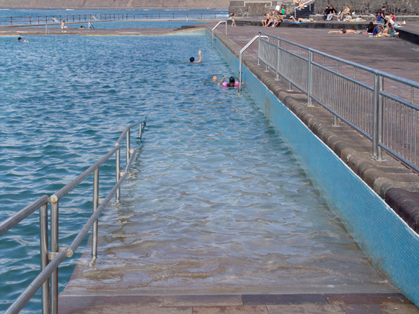
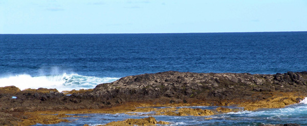

La Laguna
Atrás-

Piscina natural El Arenisco, Punta del Hidalgo
-

Piscinas naturales de Bajamar
-

El pescado fresco es un atractivo mas de este lugar
-
Esta extensa plataforma de roca genera un importante ecosistema
-

En la Punta del Hidalgo aún se puede ver el Mujo Picón marcando el límite de la marea
-
El Faro de la Punta marca el punto ás al Norte de Tenerife